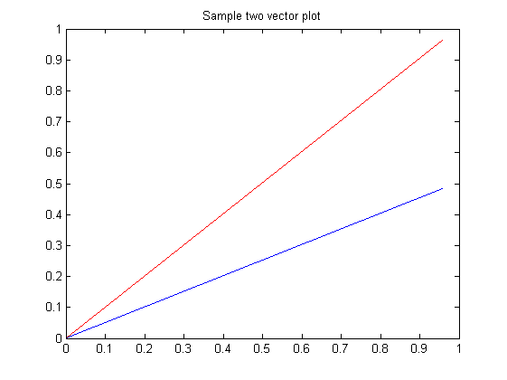

2. Vector math.
Contents
clear all
close all
x = [3, 2, 5, 1]
x =
3 2 5 1
y = zeros(1,4);
y(1)=-2; y(3)=2; y(4)=-4;
2*x
ans =
6 4 10 2
x+y
ans =
1 2 7 -3
x'*y
ans =
-6 0 6 -12
-4 0 4 -8
-10 0 10 -20
-2 0 2 -4
- (g) The inner product you find should return a scalar value 0, what does this mean about these two vectors? they are perpendicular to each other
z=x.*y
z =
-6 0 10 -4
3. Plotting
a = rand(2);
b = rand(2);
plot([0, a(1)], [0, a(2)], 'r'); hold on
plot([0, b(1)], [0, b(2)], 'b');
xlim([0,1]);ylim([0,1])
title('Sample two vector plot')
